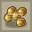
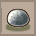
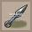
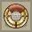
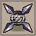
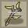
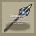

Throw
อาวุธขว้าง
Baseball
คลิกเพื่อดูตัวอย่าง
Level : 1
พลังโจมตี[ทุบ-ฟัน-แทง-เวทมนต์] : 0-0-20-0
น้ำหนัก / ความจุ / น้ำหนักตอนสวมใส่ : 0.1 / 0.1 / 0.2
อาชีพที่สวมใส่ : All Job
แหล่งที่มา : ของแถมจากการซื้อ Hobby Ticket [Cash] แบบ 11 ใบ

Winter Clothe Seed
คลิกเพื่อดูตัวอย่าง
Level : 1
พลังโจมตี[ทุบ-ฟัน-แทง-เวทมนต์] : 0-0-1-0
น้ำหนัก / ความจุ / น้ำหนักตอนสวมใส่ : 0.1 / 0.1 / 0.1
อาชีพที่สวมใส่ : All Job
แหล่งที่มา :
Quest Gardener
Archen Throw
คลิกเพื่อดูตัวอย่าง
Level : 3
พลังโจมตี[ทุบ-ฟัน-แทง-เวทมนต์] : 0-0-8-0
น้ำหนัก / ความจุ / น้ำหนักตอนสวมใส่ : 0.1 / 0.1 / 0.2
อาชีพที่สวมใส่ : Novice / Scout Class / Ranger Class / Joint Job
แหล่งที่มา :
Throw Create LV 1 / Wood Box 2 / Wood Box 3 / Wood Box 4 / Wood Box 5 / Wood Box 7 / Treasure 1 / Treasure 2 / Treasure 3 / Treasure 4 / Treasure 5 / Treasure 6 / Treasure 7 / Container 1 / Container 2 / Container 3

Small Stone
คลิกเพื่อดูตัวอย่าง
Level : 6
พลังโจมตี[ทุบ-ฟัน-แทง-เวทมนต์] : 0-0-12-0
น้ำหนัก / ความจุ / น้ำหนักตอนสวมใส่ : 0.1 / 0.1 / 0.2
อาชีพที่สวมใส่ : Scout Class / Ranger Class / Joint Job
แหล่งที่มา :
Throw Create LV 1 /
Grocery[Sky Tower Island - Dominion] / Wood Box 2 / Wood Box 3 / Wood Box 4 / Wood Box 5 / Treasure 1 / Treasure 2 / Treasure 3 / Treasure 4 / Treasure 5 / Treasure 6 / Treasure 7 / Container 1 / Container 2 / Container 3
ราคาซื้อ : 11 G
Throwing Dagger
คลิกเพื่อดูตัวอย่าง
Level : 11
พลังโจมตี[ทุบ-ฟัน-แทง-เวทมนต์] : 0-0-22-0
น้ำหนัก / ความจุ / น้ำหนักตอนสวมใส่ : 0.1 / 0.1 / 0.2
อาชีพที่สวมใส่ : Scout Class / Ranger Class / Joint Job
แหล่งที่มา : Merchant Guild / Wood Box 1 / Wood Box 3 / Wood Box 4 / Wood Box 5 / Treasure 1 / Treasure 2 / Treasure 3 / Treasure 4 / Treasure 5 / Treasure 6 / Treasure 7 /Treasure 9 /Treasure 11
ราคาซื้อ : 10 G

Kunai
คลิกเพื่อดูตัวอย่าง
Level : 21
พลังโจมตี[ทุบ-ฟัน-แทง-เวทมนต์] : 0-0-30-0
น้ำหนัก / ความจุ / น้ำหนักตอนสวมใส่ : 0.2 / 0.2 / 0.3
อาชีพที่สวมใส่ : Scout Class / Ranger Class
แหล่งที่มา :
Caravan Merchant[Steap Desert] /
Weapon Seller[Tonka Island] /
Throw Create LV 3 / Wood Box 7 / Treasure 7 / Treasure 8 / Treasure 9 / Treasure 11 / Container 5
ราคาซื้อ : 15 G

Chakram
คลิกเพื่อดูตัวอย่าง
Level : 45
พลังโจมตี[ทุบ-ฟัน-แทง-เวทมนต์] : 0-0-50-0
น้ำหนัก / ความจุ / น้ำหนักตอนสวมใส่ : 0.2 / 0.2 / 0.3
อาชีพที่สวมใส่ : Scout Class / Ranger Class
แหล่งที่มา :
Weapon Seller[Tonka Island] / Wood Box 7 / Treasure 8 / Treasure 9 / Treasure 11 / Container 5
ราคาซื้อ : 30 G

Dagger
คลิกเพื่อดูตัวอย่าง
Level : 60
พลังโจมตี[ทุบ-ฟัน-แทง-เวทมนต์] : 0-0-60-0
น้ำหนัก / ความจุ / น้ำหนักตอนสวมใส่ : 0.2 / 0.2 / 0.3
อาชีพที่สวมใส่ : Scout Class / Ranger Class / Joint Job
แหล่งที่มา :
Weapon Seller[Tonka Island] /
Monster[Bandit] / Treasure 8 / Treasure 9 / Treasure 11 / Container 5
ราคาซื้อ : 45 G
Electric Cakram
คลิกเพื่อดูตัวอย่าง
Level : 80
พลังโจมตี[ทุบ-ฟัน-แทง-เวทมนต์] : 0-0-88-0
น้ำหนัก / ความจุ / น้ำหนักตอนสวมใส่ : 0.2 / 0.2 / 0.3
อาชีพที่สวมใส่ : Scout Class / Ranger Class
แหล่งที่มา :
Weapon Seller[Tonka Island]
ราคาซื้อ : 50 G

Ancient Throw
คลิกเพื่อดูตัวอย่าง
Level : 90
พลังโจมตี[ทุบ-ฟัน-แทง-เวทมนต์] : 0-0-94-0
น้ำหนัก / ความจุ / น้ำหนักตอนสวมใส่ : 0.3 / 0.3 / 0.3
อาชีพที่สวมใส่ : Scout Class / Ranger Class / Joint Job
แหล่งที่มา :
Quest Weapon LV 90

คลิกเพื่อดูตัวอย่าง
Clearly Keiborg
Level : 99
พลังโจมตี[ทุบ-ฟัน-แทง-เวทมนต์] : 0-0-94-0
น้ำหนัก / ความจุ / น้ำหนักตอนสวมใส่ : 0.3 / 0.3 / 0.3
อาชีพที่สวมใส่ : Scout Class / Ranger Class / Joint Job
แหล่งที่มา :
Quest Weapon LV 99


![Monster[Spell Limitant]](http://www.kmitl.ac.th/~s1050421/ECOData/Monster/Human/SpellMilitant.jpg){kind=link}


![Monster[Bandit]](http://www.kmitl.ac.th/~s1050421/ECOData/Monster/Human/Bandit.jpg){kind=link}